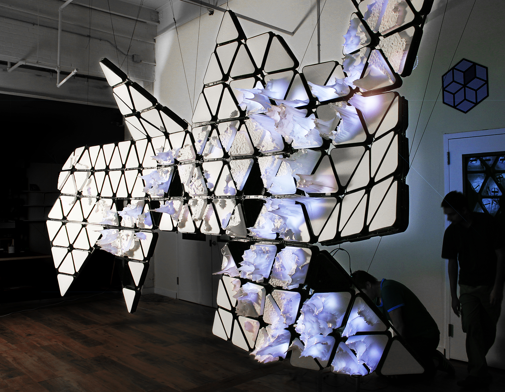
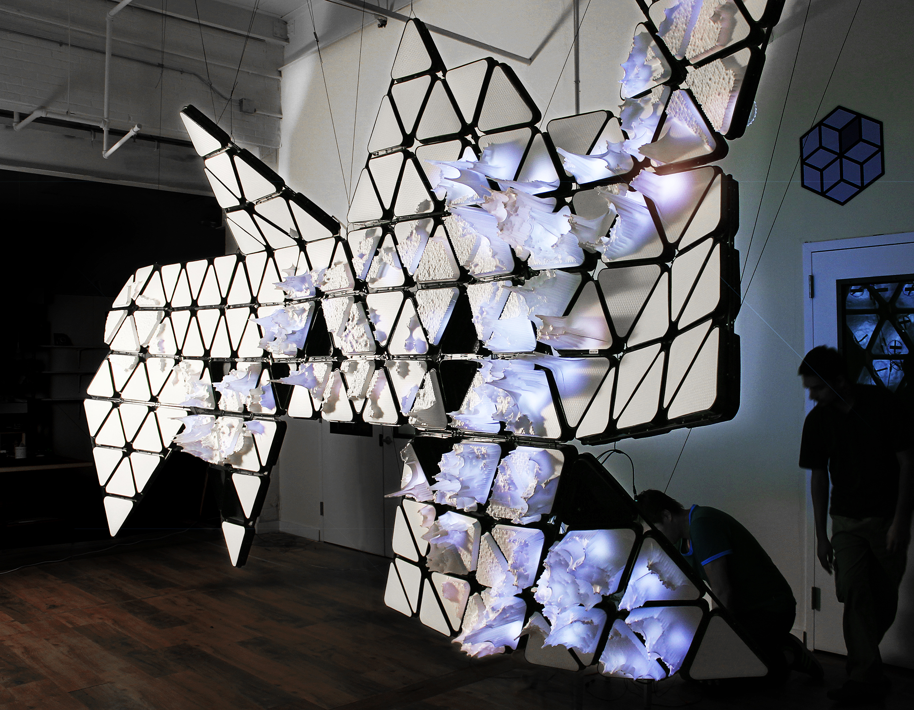
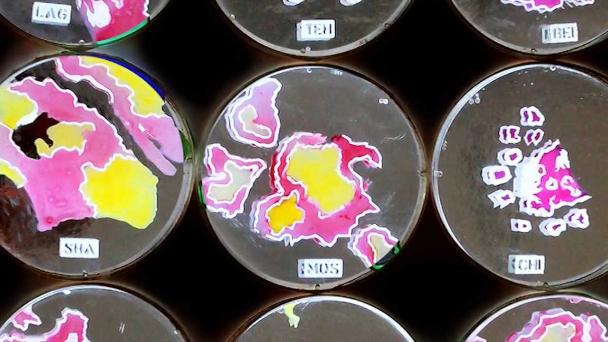

BIO CITY MAP
- Terreform ONE
- New York
- 2013
The BioCity Map predicts world population density through the use of bacteria.
The use of E. coli in a petri dish displays population density onto a large map. The three dimensional map has predicted that within the next 100 years, the world population will reach 11 billion people. The project involved the collaborative work of urban developers and planners, cartogrophers, biologists and architects, and it focused on the current 25 cities with the largest population densities.

 

The front of the structure uses
the Dymaxion map to display population density as a parametric graph

on the back, E.coli dishes
take a closer look at the 25 densest cities
population maps based on the E.coli are mathmatically graphed
to represent population density